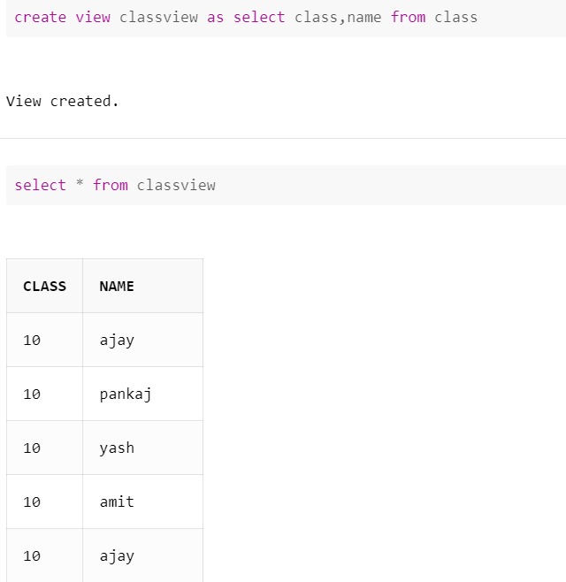

In SQL, a view is a virtual table based on the result-set of an SQL statement. A view contains rows and columns, just like a real table. The fields in a view are fields from one or more real tables in the database. You can add SQL statements and functions to a view and present the data as if the data were coming from one single table.
CREATE VIEW view_name AS
SELECT column1, column2, ...
FROM table_name
WHERE condition;
